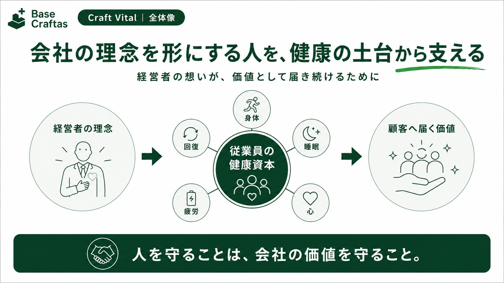
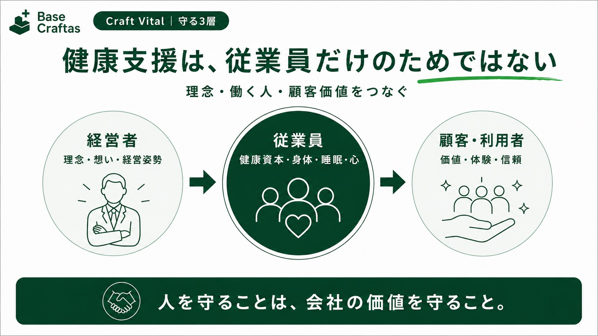
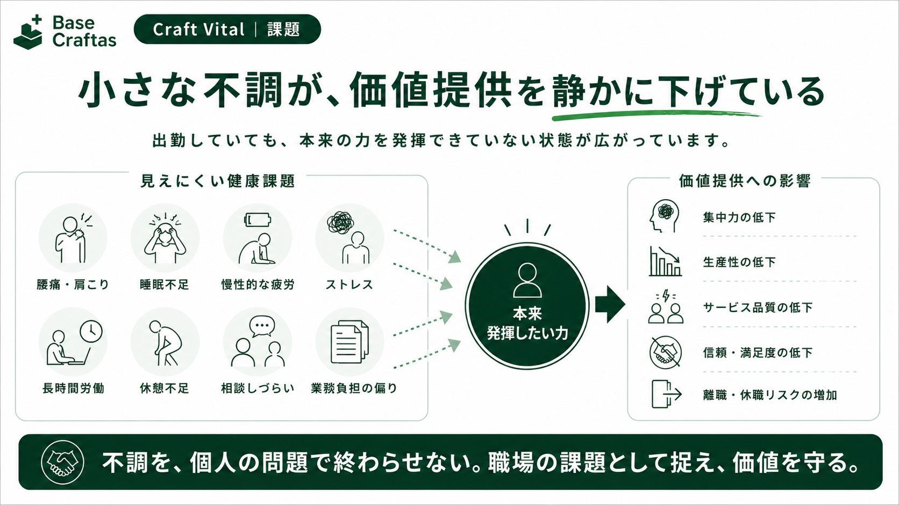
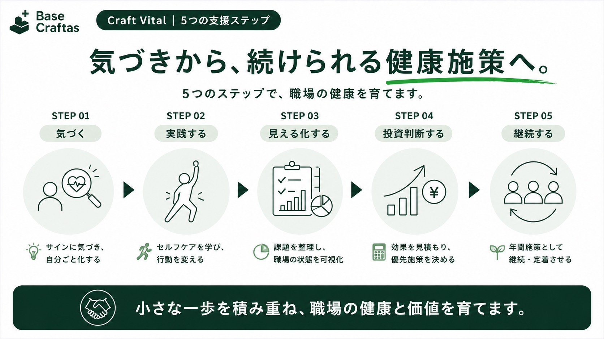
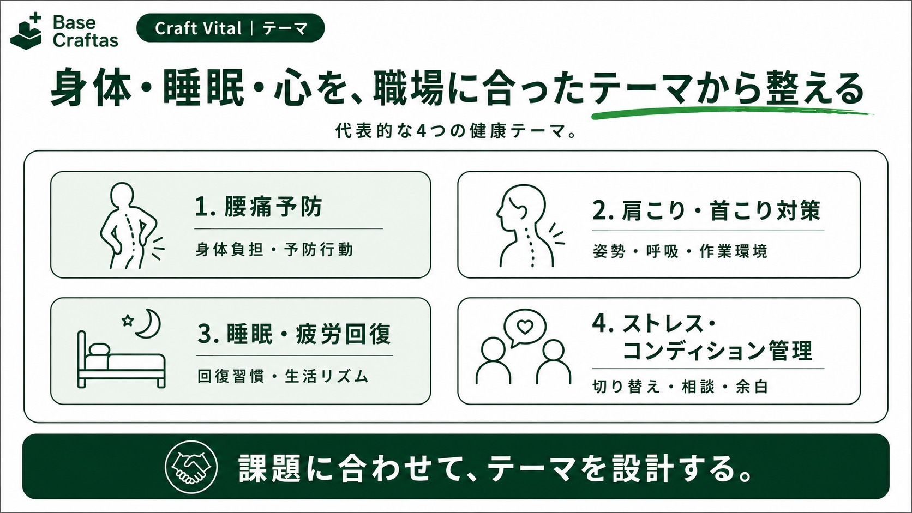
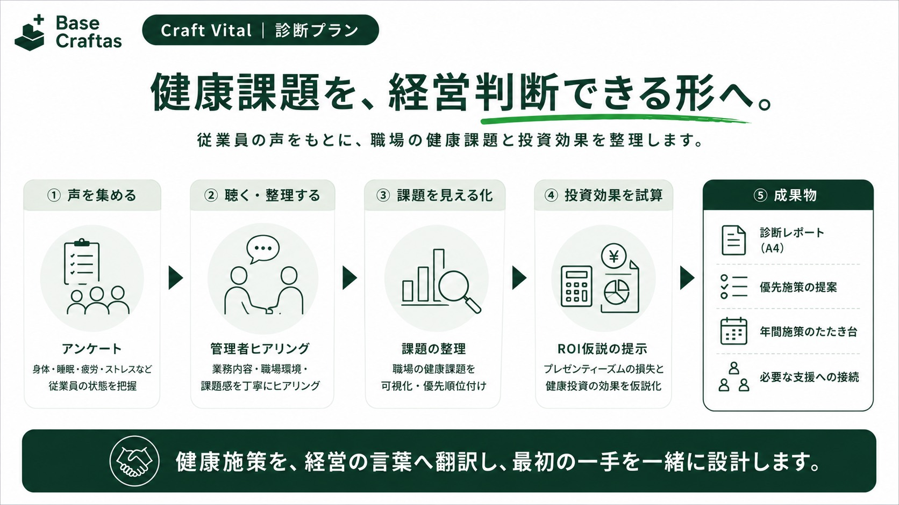

あなたの想いを届けている人たちを、
健康の土台から支える。
身体・睡眠・心の小さな不調に気づき、従業員が本来の力を発揮しやすい職場づくりを支援します。
医療行為・診断・治療ではなく、職場の健康施策・教育・環境づくりを支援するサービスです。
従業員の健康は、会社の理念を形に近づけるための経営資本です。
会社の理念を、日々の仕事として顧客や地域へ届けているのは従業員です。Craft Vitalは、理学療法士としての身体理解と健康経営・産業保健の視点を掛け合わせ、働く人の身体・睡眠・疲労・心理的余白を支えます。福利厚生で終わらせず、会社の価値が届き続けやすい状態を一緒につくります。

理念、働く人、その先の顧客。
三つの価値を支えます。
健康施策を福利厚生だけで終わらせず、経営者の想い、従業員のコンディション、顧客へ届く価値のつながりとして整理します。

こんなお悩みはありませんか？
腰痛・肩こり・睡眠不足・相談しづらさ・単発で終わる健康施策。小さな不調や働きにくさを、個人の我慢ではなく職場の課題として見える化します。

気づきから、継続する仕組みへ。
一度の研修で終わらせず、職場の健康課題を見える化し、次の投資判断につなげます。

職場に合わせて、健康の土台を整える。
腰痛・肩こり、睡眠・疲労回復、ストレス・コンディション管理など、職場の状況に合わせてテーマを選びます。

まずは、職場に合う始め方から。
明確な料金プランを先に選ぶのではなく、目的・対象者・職場の状態を確認したうえで、セミナー、診断、年間施策のどこから始めるかをご提案します。

※健康上の不調に対する診断・治療を行うサービスではありません。必要に応じて、専門家や医療機関への相談をご案内します。
導入までの流れ
お問い合わせ後、目的と現場の状況を確認し、テーマ・対象者・実施内容を整理してから進めます。
働く人の健康を、価値を支える土台へ。
健康施策をどう始めるか迷っている段階から、ご相談いただけます。医療行為・診断・治療ではなく、職場の健康施策づくりを支援します。
個別の診断・治療ではなく、職場の健康施策づくりについてご相談いただけます。